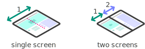
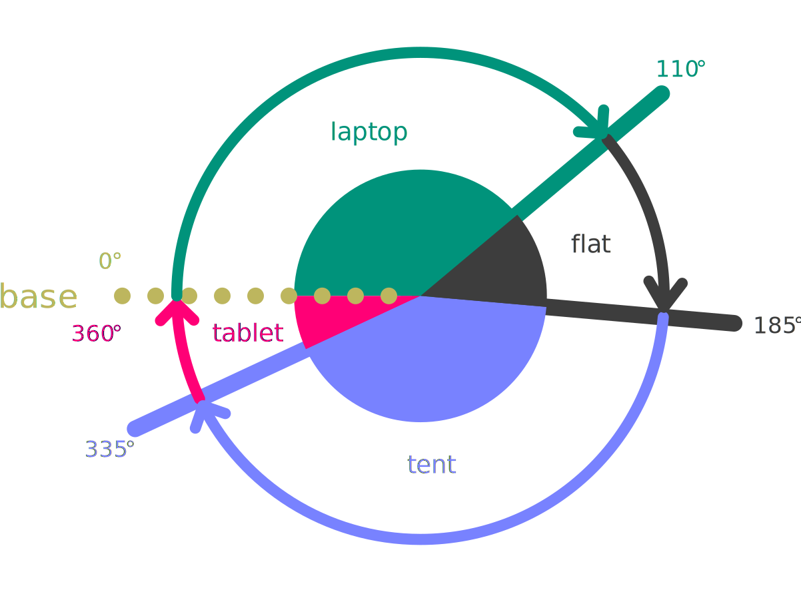
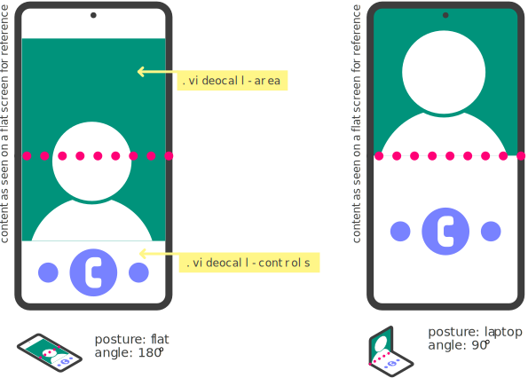
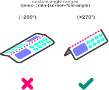
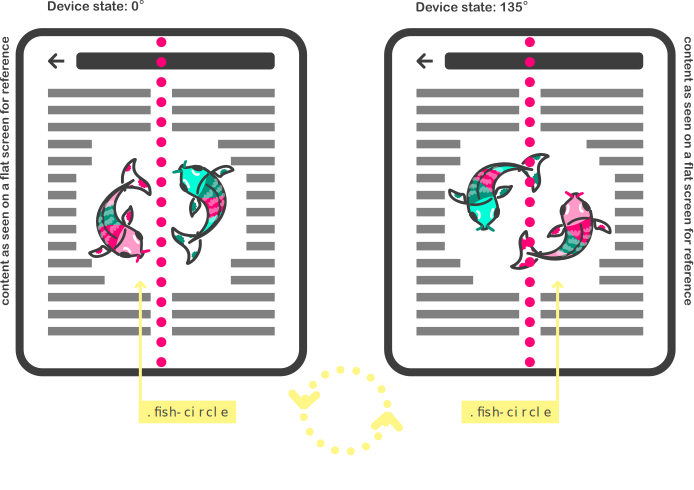

This document specifies an API that allows web applications to request the angular value to which a device with a screen hinge is folded. Under the right conditions, and if allowed, the value representing the angle in degrees is returned.
Implementors need to be aware that this specification is extremely unstable. Implementors who are not taking part in the discussions will find the specification changing out from under them in incompatible ways. Vendors interested in implementing this specification before it eventually reaches the Candidate Recommendation phase should subscribe to the repository on GitHub and take part in the discussions.
New types of mobile devices are appearing that have some sort of folding capabilities around the screen. Hence, when the device folds, it physically forms an angle. The main interest in knowing the fold angle is because there are opportunities in responsive design that enable new user experiences.
Among the described "folding" devices, there are mainly two different physical form factors: devices with a single flexible screen (seamless), and devices with two screens (with seam). They can both fold around a hinge, and the current specification applies to both types. It should be clarified as well that both seamless and (devices) with seam can be of different dimension ranging from mobile and tablets to laptop sizes. It should also be noted that different devices will have different default orientations (portrait or landscape), and that the fold might happen in a vertical or horizontal way.
From enhancing the usability of a website by avoiding the area of a fold, to enabling innovative use cases for the web, knowing the fold angle can help developers tailor their content to different devices. It can also enable to detect different postures the device might be in.
Content can be consumed and browsed even when the device is not flat, in which case the developer might want to provide a different layout for it depending on the state of the angle of the fold. Additionally, developers can adapt content depending on various “postures” and potentially also animate some of these transitions. You can refer to a description of use cases.
The [[cssom-view]] specification defines the Screen interface, which this specification extends:
[SecureContext]
partial interface Screen {
[SameObject] readonly attribute ScreenFold fold;
};
[SecureContext, Exposed=(Window)]
interface ScreenFold : EventTarget {
readonly attribute unsigned short angle;
readonly attribute ScreenFoldPosture posture;
attribute EventHandler onchange;
};
enum ScreenFoldPosture {
"no-fold",
"laptop",
"flat",
"tent",
"tablet",
"book"
};
When getting the type attribute, the user agent MUST return the [=environment settings object/responsible document=]'s current screen fold angle.
When getting the type attribute, the user agent MUST return the [=environment settings object/responsible document=]'s current screen fold {{posture}}.
The {{onchange}} attribute is an event handler whose corresponding
event handler event type is "change".
This specification defines the following posture values:
In the API, the [=posture=] values are represented by the {{ScreenFoldPosture}} enum values.
'screen-fold-posture' media feature
The screen-fold-posture media feature represents,
via a CSS media query [[MEDIAQ]], the posture of the device.
This media feature applies to the top-level browsing
context and any child browsing contexts. Child browsing contexts
reflect the posture of the top-level browsing
context.
A user agent MUST reflect the applied posture of the web application via a CSS media query [[MEDIAQ]].
'screen-fold-angle' media feature
The screen-fold-angle media feature represents,
via a CSS media query [[MEDIAQ]], the <angle> of the device.
This media feature applies to the top-level browsing
context and any child browsing contexts. Child browsing contexts
reflect the <angle> of the top-level browsing
context.
A user agent MUST reflect the applied <angle> of the web application via a CSS media query [[MEDIAQ]].
All documents have a current screen fold angle and a current posture. Both of them SHOULD be initialized when the document is created, otherwise they MUST be initialized the first time they are accessed and before their value is read. The user agent MUST update the screen fold information of the document to initialize them.
For a given document, the current posture is derived from the current screen fold angle and the current screen orientation.
These tables are non-normative.
The values are approximations and might differ per device. For instance, a device might not yield exactly 180° when laying flat, but instead values ranging from 175° to 185°. Device makers SHOULD make sure that the physical device postures map correctly to the postures defined by this specification.
Some devices might also lack one or more of the postures due to physical constraints or device design, in which case the device SHOULD make sure that all combinations of angles and device orientation (which can be locked by [[SCREEN-ORIENTATION]] and host OS) maps into one of the defined postures.
 The posture values table shows how the {{posture}} values are derived depending on the orientation of the fold:
Devices with a horizontal fold are the ones for which in their main form factor, the folding occurs from side to side, across the screen(s).
| Current posture | Current screen orientation | Current screen fold angle |
|---|---|---|
| Laptop | "portrait-primary" | "portrait-secondary" | `[0° - 140°[` |
| Flat | any orientation | `[140° - 185°[` |
| Tent | any orientation | `[185° - 335°[` |
| Tablet | any orientation | `[335° - 360°]` |
| Book | "landscape-primary" | "landscape-secondary" | `[0° - 140°[` |
Devices with a vertical fold are the ones for which in their main form factor, the folding occurs from top to bottom, across the screen(s).
| Current posture | Current screen orientation | Current screen fold angle |
|---|---|---|
| Laptop | "landscape-primary" | "landscape-secondary" | `[0° - 140°[` |
| Flat | any orientation | `[140° - 185°[` |
| Tent | any orientation | `[185° - 335°[` |
| Tablet | any orientation | `[335° - 360°]` |
| Book | "portrait-primary" | "portrait-secondary" | `[0° - 140°[` |
The steps to update the screen fold information of a document are as follows:
Whenever the screen(s) fold angle changes, the user agent MUST run the following steps as part of the next animation frame task:
Whenever a document becomes visible per [[PAGE-VISIBILITY]], in other words after the now visible algorithm is run, the user agent MUST run the following substeps as part of the next animation frame task:
Developers need to be aware that a {{Screen.fold}} object from a document that is not visible, as per [[PAGE-VISIBILITY]], will not receive an orientation change event. This is to prevent unnecessary changes to layout, etc. in the non-visible web application.
The Screen Fold API exposes two kinds of information:
Typical sensor readings are sent at a constant frequency to whomever is listening to its readings. However the fold angle only communicates its value when the hinge is manipulated by the user. Variations in the angle’s readings and posture calculation, as well as event dispatching frequency offer a possibility of fingerprinting to identify users. User agents may reduce this risk by limiting or coalescing events when exposing this information to web developers. Users don’t constantly adjust the angle, so the fold angle value is changing in bursts: the events may be dispatched at a very low frequency most of the time and fire at a high frequency when the device is being opened or closed. In order for the events to be dispatched, the content must be on the foreground and visible to the user.
Minimizing the accuracy of the angle readout generally decreases the risk of fingerprinting. User agents should not provide unnecessarily verbose readouts of the hinge angle data. Posture values are not very useful values to fingerprint a user. They’re similar in concept with the orientation values. The posture change is only triggered in certain fold angle values providing a very low resolution reading. Because the changes are very sparse changes with very few predefined values, it makes it hard to precisely identify users across sites.
If the same code using the API can be used simultaneously in different window contexts on the same device it may be possible for that code to correlate the user across those two contexts, creating unanticipated tracking mechanisms.
This section is non-normative.
Sensors can provide information that can uniquely identify the device using those sensors. Every concrete sensor model has minor manufacturing imperfections and differences that will be unique for this model. These manufacturing variations and imperfections can be used to fingerprint the device.
This section is non-normative.
This section gives a high-level presentation of some of the mitigation strategies specified in the normative sections of this specification.
Posture value and fold angle readings are explicitly flagged by the Secure Contexts specification as a high-value target for network attackers. Thus all interfaces defined by this specification or extension specifications are only available within a secure context.
Posture value and fold angle readings are only available for active documents whose origin is the same origin-domain with the currently focused area document.
This is done in order to mitigate the risk of a skimming attack against the browsing context containing an element which has gained focus, for example when the user carries out an in-game purchase using a third party payment service from within an iframe.
Posture value and fold angle readings are only available for the active documents whose visibility state is "visible".
User agents may mitigate certain threats by limiting the maximum sampling frequency. Coalescing and aligning the fold angle readings with the animation frame would limit the fingerprinting while still allowing animations responding to the fold angle. Limiting the maximum sampling frequency prevents use cases which rely on low latency or high data density.
An alternative to limiting the maximum sampling frequency is to limit the number of sensor readings delivered to Web application developers, regardless of what frequency the sensor is polled at. This allows use cases which have low latency requirements to increase sampling frequency without increasing the amount of data provided. Discarding intermediary readings prevents certain use cases, such as those relying on certain kinds of filters. User agent should wait before sending the angle value changes after a minimum of degrees changes to remove the noise as well as to avoid getting events while the user is just interacting with the screen. This would limit identifying users with shaky hands.
Lowering the resolution of the angle MAY lead to reducing the uniqueness that the value can have. Nonetheless, if several sites are being displayed on the same device, it can be easy to identify that it is the same user, even if the value is rounded. As a solution, applying some fuzziness to the value itself MAY work.
Lowering the resolution of the returned value may not be enough, so fuzzing out the value can algo help, in order to report different values. This fuzzy offset can help differentiate returned values, minimizing the risk of fingerprinting.
This is a simple use case of the posture and angle value being printed on the console.
screen.fold.addEventListener("change", () => {
const { angle, posture } = screen.fold;
console.log(`The current screen angle is ${angle}, which means it is in ${posture} posture!`);
})
The device is being used for a video call web service. It can be folded into the laptop posture to enable a hands-free when placed on a surface. The UA detects the posture and the UI is enhanced. Similar examples can be drafted for content to adapt to any posture. See the explainer for other key scenarios.

@media (screen-fold-posture: laptop) and (spanning: single-fold-horizontal){
body {
display: flex;
flex-flow: column nowrap;
}
.videocall-area, .videocall-controls {
flex: 1 1 env(fold-bottom);
}
}
Some scenarios might span outside of the default postures envisioned in this document. The screen-fold-angle media feature allows to define a range or threshold for the layout to change.
As an example, an experience that might require a separate viewing area by user (like a game) might find that the default 185° starting angle for the tent posture is too "open" to guarantee one user will not see the other user's screen. Using screen-fold-angle the threshold can be defined by the developer.

@media (min-screen-fold-angle: 270deg) {
/*enable custom layout for the app*/
}
Opening and closing a device might include animations linked to the value of the angle of the fold. This allows the creation of content that can mimic the effect of a pop-up book.
Another example can be mapping the state of the fold of a device to transformations of a DOM element. With this approach you could rotate an element based on the value of the angle.

let fish = document.querySelector('.fish-circle');
ScreenFold.addEventListener('change', function(e) {
//animation keyframes
let rotationFish = [
{transform: `rotate(${e.angle})`, easing: 'ease-out'}
];
fish.animate(rotationFish, 100);
};
.fish-circle {
transform: rotate(env(screen-fold-angle));
}
As one of the valid screen-fold-posture values will always be true, you can use the following snippet to detect whether a user agent supports the media feature:
@media (screen-fold-posture) {
/*The browser supports screen-fold-posture feature*/
}
For more information about media features in a boolean context please refer to
Evaluating Media Features in a Boolean Context.
The following concepts and interfaces are defined in [[SCREEN-ORIENTATION]]: current screen orientation as represented by the {{OrientationType}} enum.
The following is defined in [[MEDIAQ]]: Evaluating Media Features in a Boolean Context.
The following concepts and interfaces are defined in [[HTML]]: list of the descendant browsing contexts.
The following is defined in [[PAGE-VISIBILITY]]: now visible algorithm.
The following is used but not defined in [[FULLSCREEN]]: animation frame task.
This specification defines conformance criteria for a single product: a user agent that implements the interfaces that it contains.
We would like to offer our sincere thanks to Daniel Appelquist, Alexis Menard, Jo Balletti, and Michael Blix for their contributions to this work.